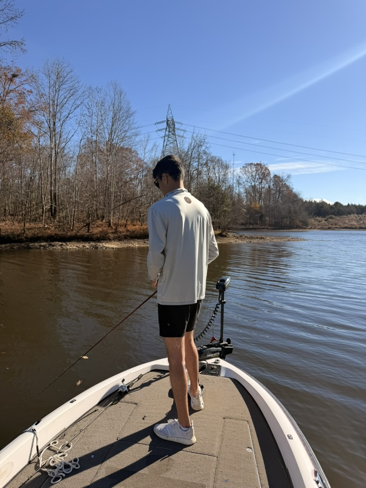

Hi, I’m a Computer Science student with a strong interest in cloud development, software engineering, and building scalable systems. I’m passionate about creating technology that is not only functional, but efficient, reliable, and designed with long-term growth in mind. My technical experience includes working with languages like C++ and Swift, developing macOS applications in Xcode, and implementing algorithms to solve complex problems. I enjoy projects that challenge me to think critically — whether that’s optimizing performance, designing clean architecture, or integrating multiple systems into a seamless solution. Lately, I’ve been especially interested in cloud technologies and distributed systems. I’m motivated by the idea of building applications that can scale, handle real-world demand, and leverage modern infrastructure tools, Outside of tech, I’m a member of the High Point Bass Fishing Team. Competitive fishing has taught me patience, preparation, and strategic thinking — qualities that translate directly into how I approach coding and problem-solving. Whether on the water or behind a screen, I focus on discipline, adaptability, and continuous improvement. I’m always looking to expand my skills, take on new challenges, and build projects that push me forward as a developer.
